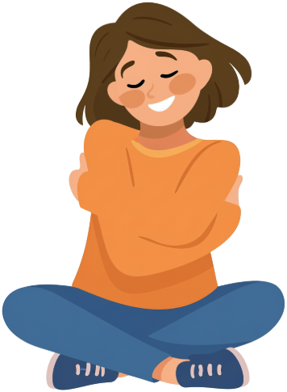

Para tu día a día
Consejos
y bienestar
Para esos días en los que pasás horas sentado, el cuello molesta o moverte cuesta un poco más. Acá compartimos ideas sencillas para tu rutina.

¿Te pasa algo de esto?
Elegí una situación para leer una respuesta breve.
¿Te quedás horas frente a la compu?
Una pausa entre una tarea y otra
A veces seguimos de largo sin darnos cuenta. Podes aprovechar un cambio de tarea para variar de posición o levantarte un momento, si te resulta cómodo. Buscá una pausa que tenga lugar en tu día.
¿Te molesta mirar hacia un costado?
Cuando el cuello molesta
Pensá cuándo lo empezaste a notar y qué actividad te resulta incómoda. No necesitas forzar el cuello para explicarlo ni saber de antemano por qué pasa. Podes consultar con esas preguntas.
¿Terminás el día con los hombros cargados?
Al terminar la jornada
Cuando frenes, recordá cómo fue tu jornada: qué tareas repetiste, cuándo hiciste una pausa y en qué momento apareció la tensión. Son detalles que te pueden servir para contar lo que sentís.
¿Algo de tu rutina te cuesta más?
Un ejemplo de tu día a día
Caminar, vestirte o subir una escalera: elegí una situación concreta y pensá qué cambió. Podes empezar por ahí para conversar con Gloria y plantear tus dudas.
Esta información es general. Para hablar de tu caso, podes escribirnos.
¿Queres hacer una consulta?
Contanos qué necesitas y te ayudamos a coordinar.